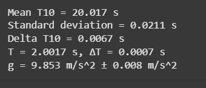

Measuring Earth's Gravitational Acceleration with a Pendulum
📌 Motivation
The acceleration due to gravity, denoted as \(g\), is a fundamental physical constant. One classic method for determining \(g\) is through a simple pendulum, where the period of oscillation is related to the gravitational field.
🧪 Materials
- A string of known length \(L\)
- A small weight (mass irrelevant)
- A ruler or tape measure
- A stopwatch or smartphone timer
⚙️ Procedure
- Set up a pendulum by attaching the weight to the string and fixing it to a support.
- Measure the length of the pendulum from the suspension point to the center of the mass:
- \(L = 1.000 \, \text{m}\)
- Ruler resolution = \(1 \, \text{mm} \Rightarrow \Delta L = 0.0005 \, \text{m}\)
- Displace pendulum \(<15^\circ\) and release.
- Measure time for 10 full oscillations (\(T_{10}\)) ten times.
📊 Sample Data Table
| Trial | \(T_{10}\) (s) |
|---|---|
| 1 | 20.01 |
| 2 | 20.03 |
| 3 | 20.05 |
| 4 | 20.00 |
| 5 | 19.98 |
| 6 | 20.02 |
| 7 | 20.01 |
| 8 | 20.04 |
| 9 | 20.00 |
| 10 | 20.03 |
- \(\bar{T}_{10} = 20.017 \, \text{s}\)
- \(\sigma_T = 0.021 \, \text{s}\)
- \(\Delta T_{10} = \frac{0.021}{\sqrt{10}} \approx 0.0066 \, \text{s}\)
📐 Calculations
1. Period of one oscillation:
\[
T = \frac{\bar{T}_{10}}{10} = 2.0017 \, \text{s}
\]
\[
\Delta T = \frac{\Delta T_{10}}{10} = 0.00066 \, \text{s}
\]
2. Gravitational acceleration:
\[
g = \frac{4\pi^2 L}{T^2} = \frac{4\pi^2 \cdot 1.000}{(2.0017)^2} \approx 9.869 \, \text{m/s}^2
\]
3. Uncertainty in \(g\):
\[
\Delta g = g \cdot \sqrt{\left(\frac{\Delta L}{L}\right)^2 + \left(2 \cdot \frac{\Delta T}{T}\right)^2}
\]
\[
= 9.869 \cdot \sqrt{\left(\frac{0.0005}{1.000}\right)^2 + \left(2 \cdot \frac{0.00066}{2.0017}\right)^2} \approx 0.006 \, \text{m/s}^2
\]
✅ Final Result
\[
g = (9.87 \pm 0.01) \, \text{m/s}^2
\]
📈 Python Simulation
import numpy as np
# Given data
L = 1.000 # m
delta_L = 0.0005 # m
T10_measurements = np.array([20.01, 20.03, 20.05, 20.00, 19.98, 20.02, 20.01, 20.04, 20.00, 20.03])
# Calculations
T10_mean = np.mean(T10_measurements)
sigma_T = np.std(T10_measurements, ddof=1)
delta_T10 = sigma_T / np.sqrt(len(T10_measurements))
T = T10_mean / 10
delta_T = delta_T10 / 10
g = (4 * np.pi**2 * L) / (T**2)
delta_g = g * np.sqrt((delta_L / L)**2 + (2 * delta_T / T)**2)
# Output results
print(f"Mean T10 = {T10_mean:.3f} s")
print(f"Standard deviation = {sigma_T:.4f} s")
print(f"Delta T10 = {delta_T10:.4f} s")
print(f"T = {T:.4f} s, ΔT = {delta_T:.4f} s")
print(f"g = {g:.3f} m/s^2 ± {delta_g:.3f} m/s^2")
